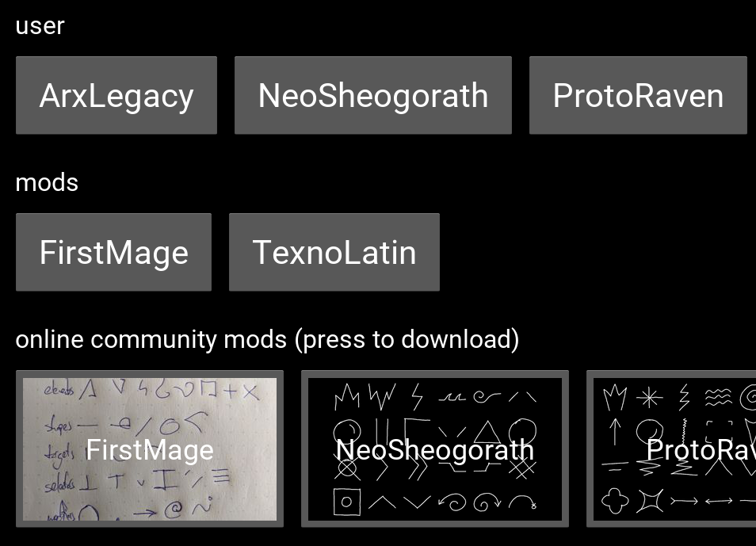

(old) Words of Power Editor python Kivy edition¶
Status¶
OBSOLETE by new wopeditor¶
You can use final python-wopeditor-0.1.1 to:
- create and save new magic symbols and alphabets in TexnoMagic format
- draw multiple drawings of a symbol using mouse or other pointing device - graphic tablets work too
- train and visualize GMM-based symbol models from all available drawings
- download and view community alphabets as mods from wop.mod.io with one click
- export alphabets as single .zip file you can upload to wop.mod.io
- participate in Core Symbols Challenge ⊂(✰‿✰)つ
I was able to use python-wopeditor to create magic alphabets including
working models for recognition of individual magic symbols so it was a great
success as a proof of concept.
However, my experience with Kivy framework used to build UI in this version was so unpleasant and painful I'm not willing to waste another minute of my life with writing Kivy spaghetti code for basic features that should simply work out of the box but they never do.
Please see the new wopeditor based on Godot which is going to reach feature parity sooner or later.
screenshot¶

Sources¶
Installation¶
See Installation.
Bugs and Feature Requests¶
wopeditor-python isn't maintained anymore, please see the new wopeditor.
Contact¶
Feel free to drop by #wopeditor @ texnoforge discord.